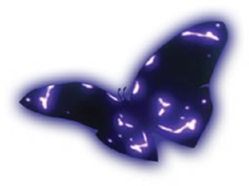

Our mission
Make butterfly data accessible to students, citizen scientists, and potential members. The more we learn, the more people we can convert.
FLUTTR is a progressive web app for exploring Australian butterflies by habitat, characteristics, and location. We believe butterflies are vital indicators of climate change and biodiversity health.

Make butterfly data accessible to students, citizen scientists, and potential members. The more we learn, the more people we can convert.
Species names, habitats, size, food plants, and colour patterns.
Join us. Join butterflies. Join the family. We are all butterflies, and we are all family. Be butterflies.